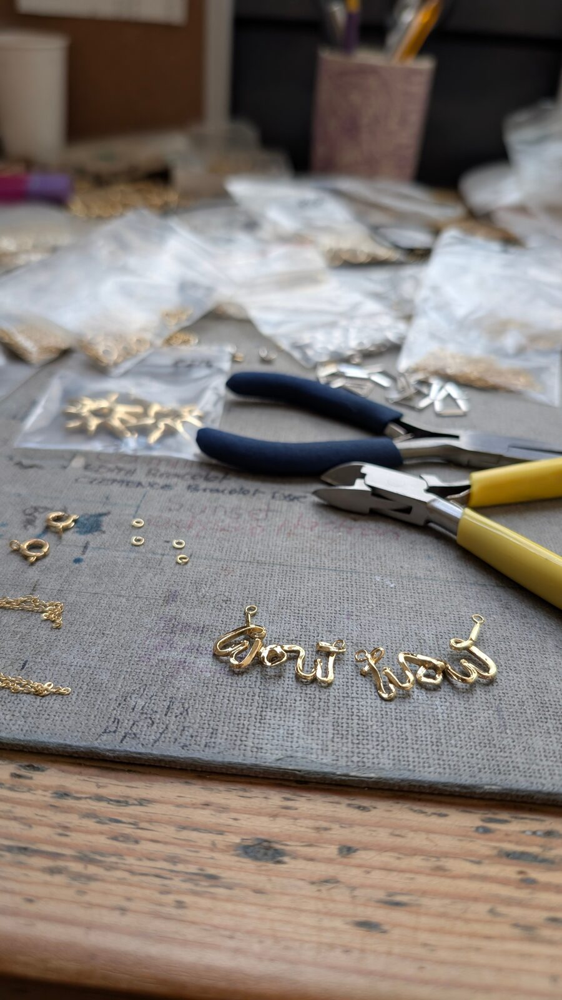
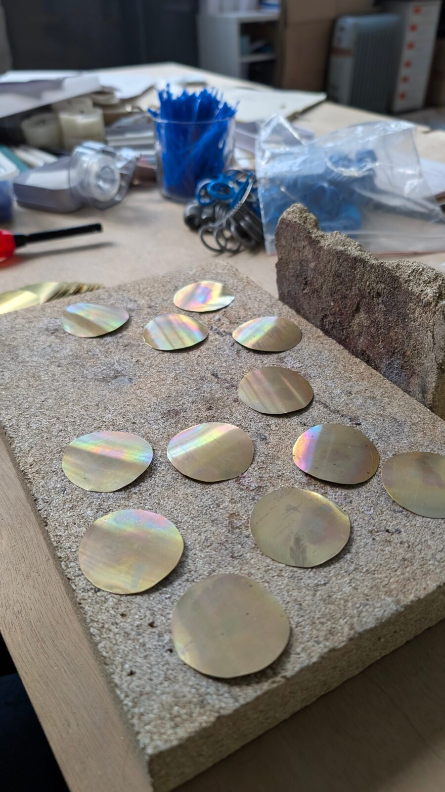
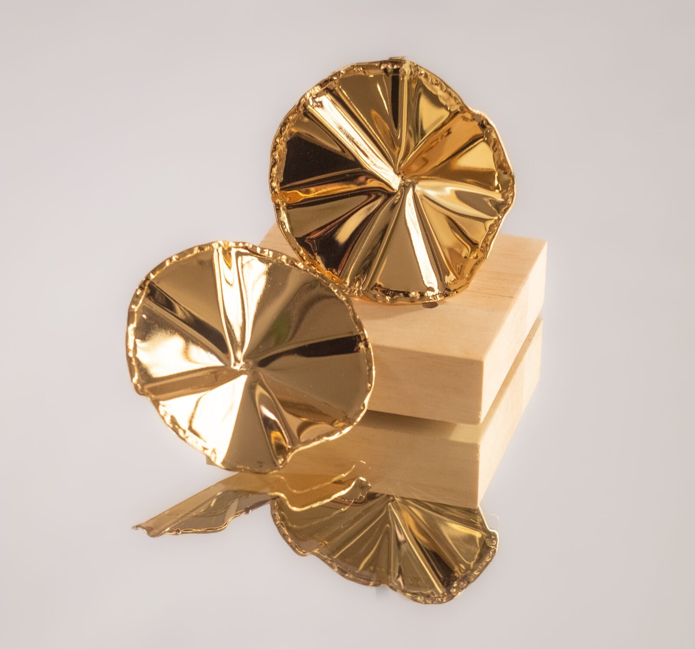
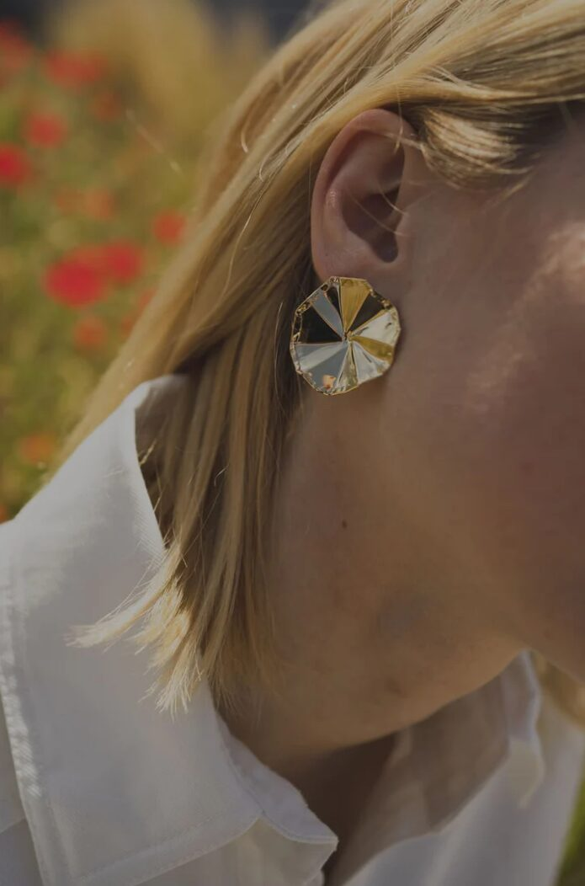

Montage et conception du bijou
J’ai également participé au montage de bijoux destinés au site internet de la marque Ennato. Ce travail consistait à assembler les différentes pièces, notamment en travaillant les chaînes et les fermoirs.
J’ai appris à choisir les chaînes adaptées aux bijoux afin d’obtenir un rendu harmonieux et esthétique, tout en veillant à la solidité et au bon fonctionnement du bijou. J’ai également participé à la création de stock pour l’une des boucles d’oreilles présentes sur le site.

-

Tracé et découpe
Le bijou est d’abord tracé sur une plaque de laiton, puis découpé avec précision afin d’obtenir la forme souhaitée.
-

Mise en forme et modelage
La pièce est ensuite façonnée en pliant le métal et en rabattant certaines parties, afin de lui conférer le volume, la structure et les courbes qui définiront l’apparence finale du bijou.
-

Dorure
Une fois le bijou terminé et poli, il est envoyé chez le doreur pour être plaqué à l’or fin, ce qui lui donne sa couleur et sa finition finale.